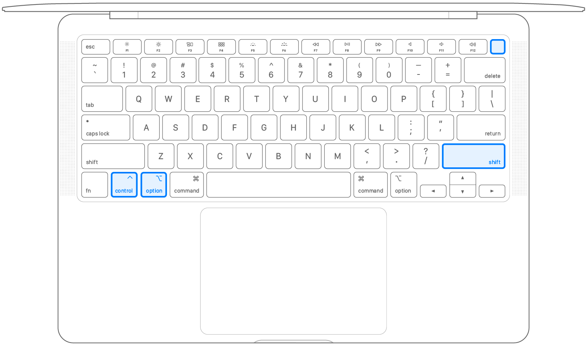

SMC (system manager controller) управляет такими вещами как:
Если есть проблемы с чем-то связанным, то сброс SMC может помочь.
Перед сбросом SMC нужно попробовать следующее:
1. Выключить Mac;
2. Зажать кнопку питания на 10 секунд;
3. Подождать пару секунд и включить Mac.
Если проблема не исчезнет, то можно перейти к сбросу SMC:
1. Выключить Mac;
2. Зажать на клавиатуре следующие кнопки: Control (слева) + Option (слева) + Shift (справа) и держать 7 секунд;
3. Продолжать держать кнопки, добавить кнопку питания и держать все 4 кнопки ещё 7 секунд.

4. Подождать пару секунд и включить Mac.